← Home
Unity and Unreal Engine
Engine screenshots and Blueprint graphs from the projects behind my prototypes: 2D platformers, VR and Mixed Reality experiences, and the Unreal fighting-game and multiplayer systems built entirely in Blueprints.
Unity Projects
Editor captures from the Unity Learn prototype series and my own game-design prototype.

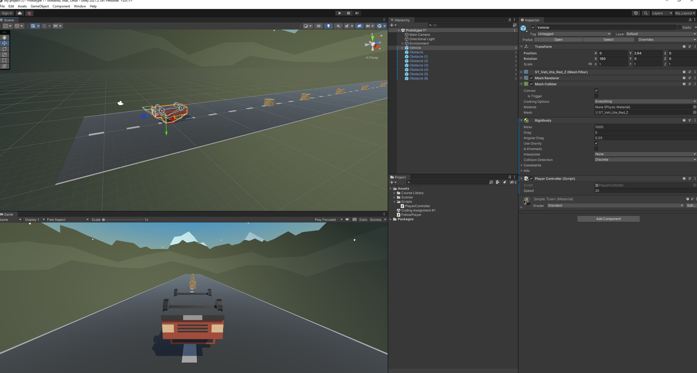
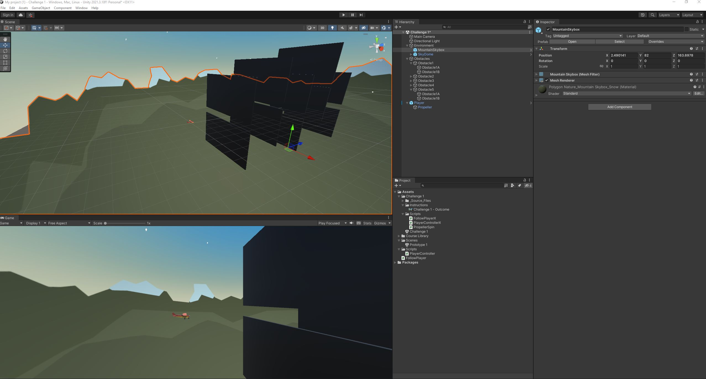
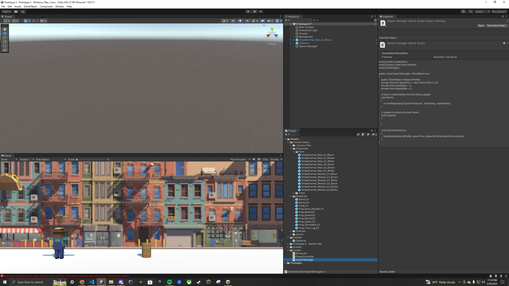
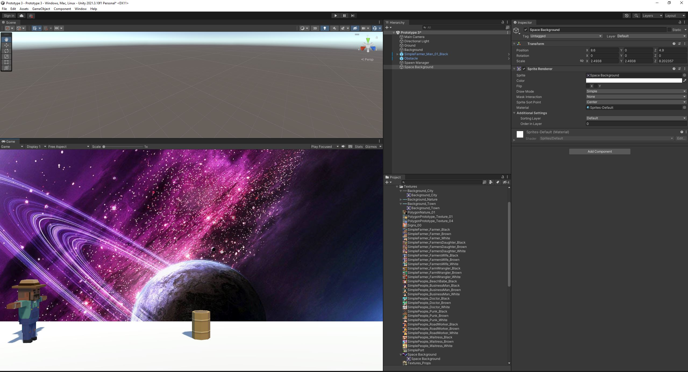
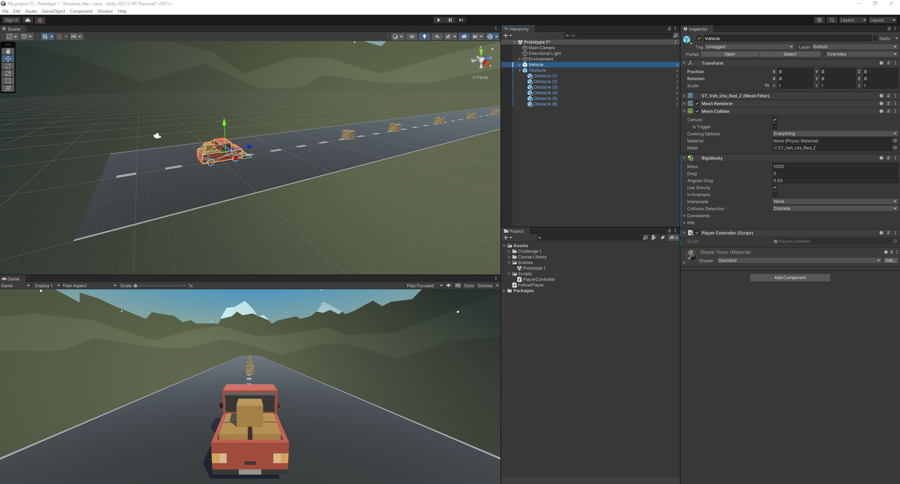
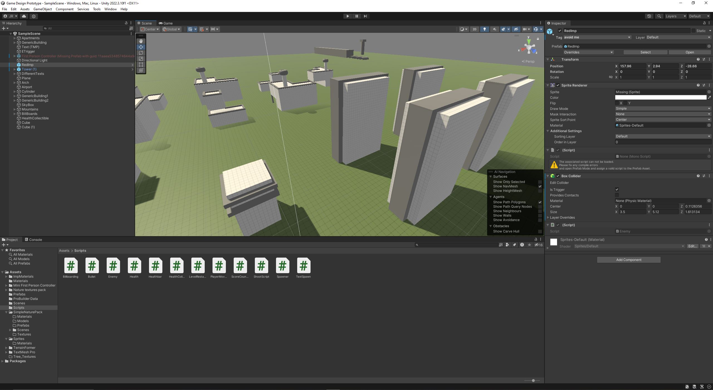
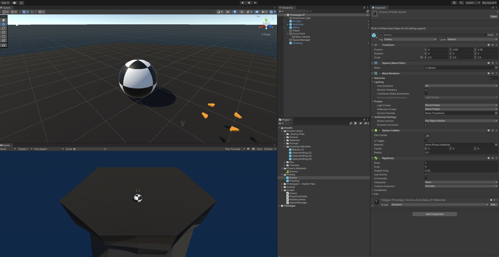
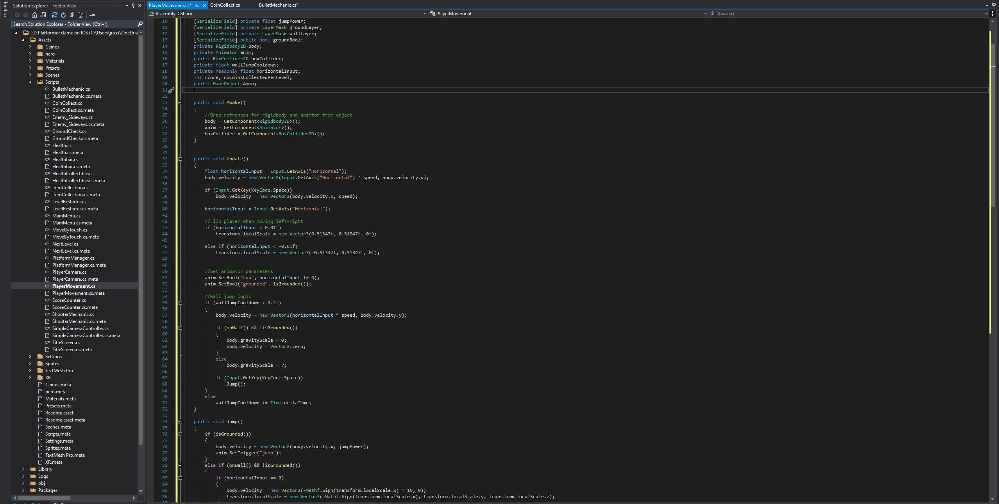
Unreal Engine Projects
Blueprint graphs from the 2D fighter, the multiplayer target range and the enemy AI.


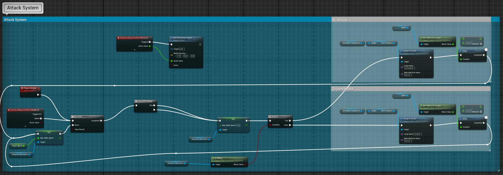
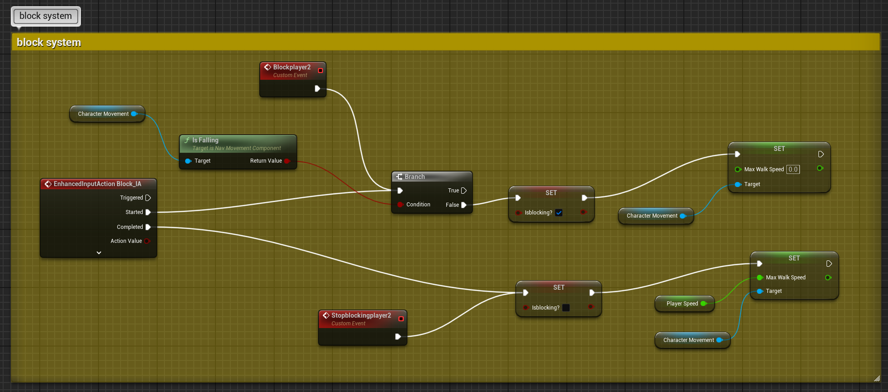
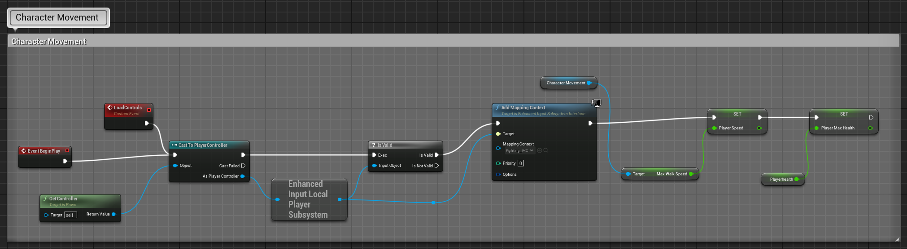


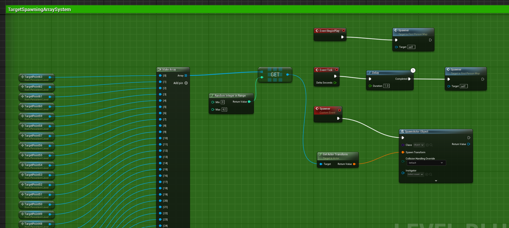
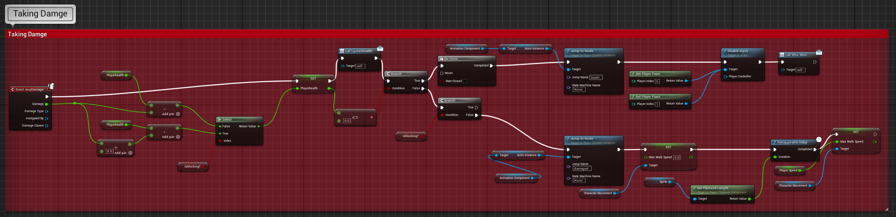
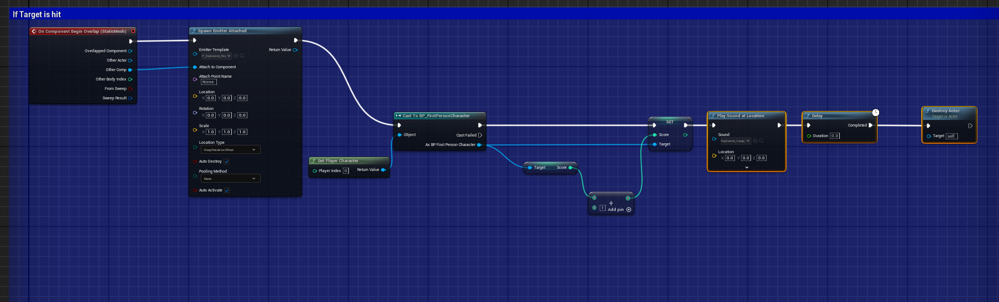
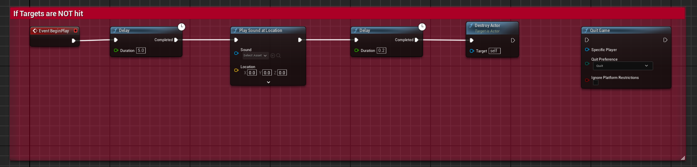